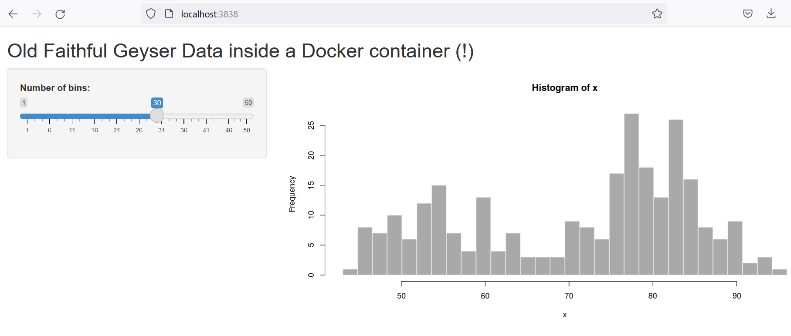

Using Docker for Shiny Apps
Docker
Shiny
Containerizing your Shiny apps
Shiny apps are a great way to provide an interactive user interface for exploring data, running models, simulations, and much more. However, writing a Shiny app on your local computer is one thing, but providing it to a customer or colleague in a scalable way requires something more. Enter Docker.
What is Docker? Docker provides a way to run your Shiny app inside something called a container, which is basically an isolated virtual environment (read more here). This allows you to share your app via cloud providers such as AWS and Azure. You can also run the container on a local machine, without needing to worry about R installations and other dependencies.
Sounds great. And the best thing is that it is not that difficult to containerize your Shiny app. Let’s see what is needed.
Installing Docker
You will need to install Docker Desktop to get the job done. The installation depends on your operating system, but it should be easy enough for Mac OS, Windows, and Linux as well. The website has detailed instructions to guide you through the process.
Building a Docker image
Now that Docker is up and running we need to create something called a Dockerfile. It is needed for building a Docker image of our Shiny app. What is an image then? Image is basically a blueprint for your container. It tells what code should run inside the container, and which dependencies the code has starting from the operating system (OS), programming language versions, packages etc. The container itself, is basically a running instance of the said image.
Specifying everything, starting from the OS, for the Docker image may sound intimidating. Luckily, we do not need to start from zero. Rather, we can build on top of existing images. There are thousands of images readily available in Docker Hub. For R users, several useful images are listed under rocker. For Shiny apps, rocker/shiny and rocker/shiny-verse are good starting points, which contain everything needed for building a simple Shiny app.
Let’s run through the process of building a custom Docker image on top of an existing rocker image. You need to do three things:
Create an empty file called
Dockerfile. If the code for your Shiny app is located inside a folder calledapp, then theDockerfileshould be saved in the parent folder (soDockerfileinside.and Shiny code inside./app)Write the following commands to the Dockerfile and save it:
FROM rocker/shiny-verse:latest
COPY /app /srv/shiny-server/
EXPOSE 3838- Navigate to the folder where your
Dockerfileis located with the command line tool of your choice and build the image based on theDockerfilewith the following command:
$ docker build --tag my-app:latest .For phase 3), you can use for example the Terminal which is available in either RStudio or Visual Studio Code. The advantage of using a built-in terminal from e.g. Visual Studio Code is that the terminal prompt is already opened in your working directory where you have saved your Dockerfile. Visual Studio Code also provides help for writing Dockerfiles via the Docker extension.
Let’s take a closer look at the contents of that Dockerfile and what is actually happening. The first line of code tells Docker to build the image on top of a pre-existing image called rocker/shiny-verse. If that is not available locally, then Docker will search and pull the image from Docker Hub. The next line of code tells Docker to copy the contents of the local app folder on your computer, and duplicate it inside the Docker image. There it will place the contents behind the following path ./srv/shiny-server/. The app folder should contain all the code for your Shiny app. The last line of code declares that port 3838 of the container created based on this image should be exposed to the outside environment.
Now if we wish to run a container based on the image locally on our computer, we can do so with the following command:
$ docker run -p 3838:3838 -d --rm --name mycontainer my-app:latestAbove we are telling Docker to run a container based on the my-app:latest image. The container is by default isolated from your computer, so the flag -p 3838:3838 tells Docker that we want to connect from port 3838 to port 3838 in the container. The flags -d and --rm are for running the container in detached mode (logs are not printed to terminal), and for removing the container once it is stopped, respectively. Finally, with the --name flag, we give the container a name, which in this case is mycontainer.
After running the command, you should find your containerized Shiny app by visiting localhost:3838 on your web browser.
Once you are done using the app, you can shutdown the container with:
$ docker stop mycontainerThis will also remove the container since we used the --rm flag when starting the container.
Installing R packages
The readily available rocker/shiny and rocker/shiny-verse images include many R-packages by default. You can explore the information on different rocker images and their contents here. However, if you are preparing a Shiny app for a specific purpose, chances are that at some point you will need to install R packages not included in the above mentioned rocker images.
Let’s say we would like to use the {plotly} package in our app for some interactive plots. This is quite easy to achieve. We need to add one more command into our Dockerfile:
FROM rocker/shiny-verse:latest
## install necessary r-libraries
RUN R -e "install.packages('plotly', repos = 'https://cloud.r-project.org')"
COPY /app /srv/shiny-server/
EXPOSE 3838The RUN R -e "install.packages(...)" command does the heavy lifting. All that is left for us to do is to specify the package name, and a CRAN mirror which is detailed under the repos argument. Now, we just need to rebuild the Docker image with docker build, and plotly will be available inside the containers created based on the image.
Installing custom R packages
Ok, so installing CRAN packages is pretty easy. But what should you do in case you want to include a custom package (for example, an internal company package or something you wrote for yourself)? Let’s say we have written an R package called myawesomepkg, and want to use it. We have saved a copy of our package with devtools::build() inside a folder called pkgs. Installing the package locally in a regular R session is easy (just run install.packages('pkgs/myawesomepkg_0.0.1.tar.gz', repos = NULL)). If we want make the same package available inside a Docker container, we first need to copy the package tar.gz-file inside the image file system, and then run the install command. The install.packages() command can be included inside a regular R script. Let’s modify our Dockerfile one last time:
FROM rocker/shiny-verse:latest
## install necessary r-libraries
RUN R -e "install.packages('plotly', repos = 'https://cloud.r-project.org')"
## copy files for internal package installations
COPY /pkgs /pkgs
COPY /code /code
## install R-packages
RUN Rscript /code/install_packages.R
COPY /app /srv/shiny-server/
EXPOSE 3838So, now we are copying the ./pkgs/ and ./code/ folders from our local computer inside the image file system. The ./pkgs/ folder contains the tar.gz-file for our custom package, and the ./code/ folder contains an R-script (install_packages.R) with the needed R commands to install our custom package. Namely, one line: install.packages('pkgs/myawesomepkg_0.0.1.tar.gz', repos = NULL). That’s all we need to do. Our custom R package is now installed and available for our containerized Shiny app.
Launching a container with a script file
Earlier we saw that launching a container on your local computer is pretty straightforward. With a readily available image, one merely needs to write the following command to the command line:
$ docker run -p 3838:3838 -d --rm --name mycontainer my-app:latestAs easy as this may seem, it is definitely not an ideal way to go if you want to make the container available to a customer or a less computer savvy colleague. Luckily, we can easily make a desktop script file which runs the command once double clicked, and opens the default browser. On Windows this is achievable via a batch file and on Mac OS a shell script file. The workflow is pretty similar.
Making a Windows batch file
Open the Notepad and save an empty file on your desktop with the name of e.g. LauchMyContainer.bat. Write the following contents inside the file:
docker run -p 3838:3838 -d --rm --name mycontainer my-app:latest
start "" http://localhost:3838/Save the file, and your done. When you now double click the bat-file it will first start the container, and then open the default internet browser on http://localhost:3838/. Once you are done working with the container you will need to stop it either via command line by writing docker stop mycontainer or by using the Docker Desktop GUI. You can also write another bat-file with the docker stop command.
Making a Mac OS shell script
The Mac OS equivalent to a Windows batch file is a file with a .command ending. It is basically a shell script which is executed in the terminal. To create one, navigate to your desktop inside the terminal app, and create an empty file by writing touch LauchMyContainer.command. Then you can open the file with a text editor, and add the following contents:
docker run -p 3838:3838 -d --rm --name mycontainer my-app:latest
open http://localhost:3838/Finally, you will probably need to run the following command in the terminal to adjust user permissions to make the file run.
$ chmod u+x ./LauchMyContainer.commandThis is assuming you are still inside the Desktop folder with the terminal. Now the script file will start the container and open the internet browser when double clicked.
Final thoughts
Setting up Shiny apps to run inside a container is fairly straightforward, and allows you to share your work with other people in a scalable way. Once the app is running inside a container, you do not need to worry about the end users operating system or about any other software dependencies for that matter. The app will just work. A huge added bonus is that you can easily share containerized apps via cloud platforms as well. If you want to know more, Joe Torres has a great blog post detailing the steps needed for using Azure App service to host your Shiny app.